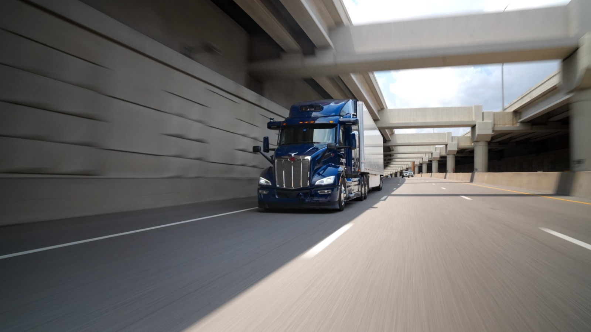

Executive Summary
This article reads one decision the U.S. Federal Motor Carrier Safety Administration published in the Federal Register on 9 October 2026. A truck belonging to the driverless trucking company Aurora can now stop on the road without anyone climbing down to set reflective triangles behind it. An amber beacon on the roof of the cab takes their place, and the exemption runs five years, to 7 October 2031.
The on-road record behind it covers three months. While 34 trucks ran more than 500,000 miles, the time the beacons were actually lit came to less than ten hours in total. The commenters who objected asked whether ten hours is enough to buy five years. In the same document, though, the agency wrote that it has no data showing the device on the other side of the comparison, the triangle, does any good either.
The provisions, figures and quotation this article carries come from the full text of the decision in the Federal Register. The size of the two studies, the survey item and the figures for the curve come from the denial the same agency issued on 27 December 2024, and the course of the lawsuit from reporting by FreightWaves and Landline Media. The reading in section 4, that the gap stays open if the records bought with this exemption are never published, belongs to no party in the docket. It is this article's.
Key numbers
Four numbers: how long the exemption runs, how long the record behind it runs, how far apart the two devices scored, and how many comments the decision drew.
Source: Federal Register decision (9 October 2026, FMCSA-2026-0958).
5 years
Length of the exemption
In force 7 October 2026, expires 7 October 2031
Under 10 hours
Time the beacons were actually lit
Cumulative, while 34 trucks ran 500,000 miles over three months
2.47 m
How far ahead the beacon came out
135.71 m for beacons against 133.24 m for triangles in Aurora's study
402
Comments filed
The first application of the same kind, in 2023, drew 51
One Beacon Where Three Triangles Stood
When a heavy truck comes to a stop on a road in the United States, the driver has to get out. A rule requires three reflective triangles placed at prescribed distances ahead of and behind the vehicle within ten minutes. Fusees may be used in place of triangles, and a separate rule requires exterior lamps to burn steady rather than flash. This decision sets all three provisions aside at once.
There is nobody aboard an Aurora truck to climb down. The alternative the company offered is an amber beacon on the roof of the cab that flashes once the vehicle stops. The Federal Motor Carrier Safety Administration found that the device delivers a level of safety equivalent to or greater than the triangles, and granted an exemption running from 7 October 2026 to 7 October 2031. It was not given to Aurora alone. Another company operating a Level 4 automated driving system may use the same exemption if it notifies the agency in writing beforehand.
The conditions are tight. The beacon must be visible front and rear, it must be amber, and it must be mounted at least 100 inches above the ground, no lower than the top of the side mirrors and no higher than the roof of the cab. It has to flash in a pattern different from the hazard lights, and it needs redundant power so that losing one source does not put it out. It must be lit within five minutes of stopping, which is shorter than the ten minutes the existing rule allows. Hazardous materials and passengers are barred outright, and combination vehicles are limited to two 28-foot trailers.
Where the trucks may run is set as well. The exemption applies only on roads inside the operational design domain the automated driving system has been validated for, the band of conditions it is built to handle. This is not permission to run anywhere in the country. The condition is the agency's answer to the objection that five years was granted on material covering neither the full range of weather and road conditions nor the range of lighting. A Level 4 system cannot leave its own domain to begin with, the reasoning goes, so the beacon is only ever used inside it.
The Numbers Aurora Offered, the Numbers Its Critics Counted
The same request first arrived in 2023. Aurora and Waymo filed it together, and the agency denied it on 27 December 2024. Its reason was that an exemption which does not specify which company will fit which equipment to which vehicle weakens the basis for claiming an equivalent level of safety in the first place. In its place the agency gave Aurora alone a waiver cut to a short term, renewed in three-month blocks since 10 October 2025. This five-year exemption rests on the record from that waiver period.
What Aurora reported runs like this. Between 10 October 2025 and 9 January 2026, 34 trucks covered more than 500,000 miles, and across that stretch there was not one beacon defect, malfunction or power problem. No crash occurred while a beacon was lit. The agency also noted in the decision that not a single comment submitted data showing safety had deteriorated during the waiver period.
The other side counted a different number out of the same record. Over those three months the beacons were actually lit, in the decision's own wording, for nearly 10 hours. Advocates for Highway and Auto Safety, a group that campaigns on highway safety, put it as a total of ten hours during expected stops, which cannot carry a five-year exemption. It is not a record of how the device behaves in an emergency. Five hundred thousand miles is the size of the driving, not of the question.
Yet the closing passage of the decision puts those 500,000 miles on the first line of its evidence. More than 500,000 miles driven with no adverse safety impact, nearly 10 hours of successful beacon operation, and the empirical data from the two studies, gathered together and called the totality of the evidence. Reading mileage as the size of the question was not Aurora's move alone.
The remaining objections aim at the limits of the device. If a truck jackknifes as it stops, the angled trailer can block the beacon on the roof of the cab. On a curve, over a hill or in fog, a single point of light is a poor substitute for what triangles do by standing at a distance. A single electrical failure takes the beacon with it. OOIDA, the association of owner-operator truck drivers, argued that the two studies Aurora filed do not cover the range of weather, road and lighting conditions, that the company never said specifically when and where the beacons had been lit, and that the agency should approve no exemption until it finishes its own warning-device study.
One point sits a little apart from the rest. Under the current rule a stopped truck must run its hazard lights, and under this exemption it still must. OOIDA and several other commenters noted that what disappears here, then, is not the flashing light but the layer of triangles above it. REAL Women in Trucking wrote that triangles stand at several points away from the vehicle and build a progressive warning zone, which buys an approaching driver time to recognize the hazard. A light flashing only at the cab builds no such zone.
The agency did answer the obstruction point. Even when the cab beacon is hidden behind the trailer for a moment, drivers rarely travel exactly along the centerline of a trailer and roads are rarely perfectly straight, so the blocking is fleeting. Through that moment the standard hazard lights stay on and the retroreflective sheeting on the rear of the trailer remains required as before. Holding combination vehicles to two 28-foot trailers is a condition from the same line of reasoning.
The volume of comment grew sharply this time as well. The 51 filed on the 2023 application became 402. On the supporting side were state trucking associations and manufacturing groups, autonomous driving companies including Kodiak, Gatik, Torc and Waymo, and Amazon and Uber. On the opposing side were safety groups, OOIDA, and a large number of individual truck drivers. One owner-operator filed a comment saying that some supportive filings came from submitters who had not disclosed their relationship with Aurora, and that there were signs of an organized campaign.
The Gap Written into the Same Decision
The agency rested on two studies. One is the on-road study Aurora ran in 2022, which built eight scenarios and watched how drivers coming up behind responded to triangles and to beacons. The other is the study Waymo commissioned from the Virginia Tech Transportation Institute, comparing detection and recognition by day and by night in a controlled setting. At night, braking came sooner with the beacon and passing speeds were lower. In the participant survey, 78.26% by day and 83.33% by night answered that the beacon was more noticeable and easier to see than the triangles.
The scale of those two studies, and one survey item the decision did not carry over, are worth setting alongside. By the agency's own count in the December 2024 denial (89 FR 105675), the Aurora study tested eight minutes with beacons and eight minutes with triangles at each road geometry, which the denial puts at only around 64 minutes of total testing time for the proposed beacons across the eight scenarios, and a little over two hours for both devices together. The Virginia Tech study had 48 participants. That same denial also recorded that, among respondents who answered which device was better for signaling a stopped truck, 8 out of 10 selected the triangles. The 78.26% and 83.33% the current decision cites answer a different question, which device is more noticeable and easier to see.
What became of the first study is worth a look. It was one of the grounds for the 2024 denial, because in five of the eight scenarios a lower share of drivers responded to the beacon than to the triangles. This time the same material was read from the angle of the quality and timing of the response: in six of the eight, drivers who saw the beacon began changing lanes or slowing from farther back. Converted into an average distance at response, that comes to 135.71 m for the beacon and 133.24 m for the triangles.
A gap of 2.47 meters is not enough to say that one device beats the other, and the decision does not claim that it does. The logic the agency used runs the other way: there is no basis for holding the triangles better, so there is none for blocking the beacon either. One sentence sits in the document as written. "FMCSA similarly lacks data showing that warning triangles significantly improve driver reaction time." It added that it has no data on whether triangle placement has the same effect on approaching motorists as the lane-plus-one blocking or the more extensive cone tapering that law enforcement uses. Both sentences fall where the agency is answering objections. The first goes to REAL Women in Trucking, which wrote that triangles build a progressive warning zone; the second to the owner-operator who cited police incident-management practice.
On curves, the December 2024 denial left one set of numbers behind. In the daytime test of the same Virginia Tech study, with the truck stopped on a shoulder past a curve, 9 of 12 drivers recognized the truck with the beacon and 12 of 12 recognized it with the triangles. The agency wrote then that because the warning originates farther forward at the cab than at triangles placed behind the vehicle, the beacon's warning would have to carry farther to be equivalent. The current decision does not redo that calculation. It chose instead to narrow the scope, with the condition that the beacon be used only inside the operational design domain.
The absence of anything to compare against was itself raised in 2024. The agency wrote then that neither study established a control condition measuring how drivers respond to a truck stopped with no warning device at all, and it listed that among the reasons for denial. In the current decision the same gap is put to the opposite use. Without information on the level of safety the current requirements provide, the two studies on file are taken as enough to conclude that drivers notice the beacon and respond to it at a rate comparable to the existing device. The missing baseline has moved from a reason to deny into a premise for granting.
The data is thin on both sides. The record holding up the new device is ten hours across three months, and the record holding up the old one was never in the agency's hands to begin with. On what has to be measured, and how much of it, before anyone can call an unmanned machine equally safe, this decision records that the standard has not been set yet.
Where the Records Bought with This Exemption Go
The agency did not leave the gap alone. Reporting duties come attached to the exemption. A crash that happens while the beacon is lit, or while it should have been, must be reported within five days. The date, the location, the vehicle identification number, property damage, the number of people injured and killed, and the narrative from the police report all go in. An annual report is due by 1 November each year, listing how many trucks ran under the exemption, the total miles, how often malfunctions occurred, and the road type and vehicle configuration at the time. If the beacon is judged no longer to deliver an equivalent level of safety, that too must be reported within five days.
Taken item by item, those reports are the only material that will fill this gap from here on. The same decision also records where they go. Information the carrier designates as confidential business information is withheld to the fullest extent the law allows. That is not a hypothetical. The term report from the waiver period that grounds this decision was itself filed as confidential, and when Advocates asked for it to be released the agency replied that Aurora had submitted it as confidential information. It added that the aggregate summary is contained in Aurora's application, which sits in the public docket. What can be checked from outside, in other words, is the totals: 34 trucks, 500,000 miles, zero.
Making a company file records in exchange for being excused from a rule is a sensible design in itself. But if the only party able to read those records is the regulator, then verifying safety is bound to that one party's judgment too. What is left to everyone outside is transcribing summarized figures. In exactly the place where opinion split over whether ten hours is enough, the next five years of material will pile up the same way.
This argument was not confined to the comment docket either. An owner-operator who hauls freight in a cargo van on Texas routes where driverless trucks run filed a petition with the Seventh Circuit on 8 September 2026. What he challenged was the procedure rather than the substance of the exemption: letting a three-month waiver expire and reissuing it over and over makes it possible to hold the same state of affairs indefinitely while skipping the exemption and pilot-program procedures that require public comment. He also pointed to photographs taken after an Aurora truck was struck by a pickup that ran a red light in Aledo, Texas on 8 July, in which no amber beacon is visible. The fault in that crash lay with the pickup, and both Aurora's report and the police record state that a person was at the wheel at the moment of collision. The Justice Department replied that at the time only around forty-five driverless trucks were running those routes under the waiver, so the chance of meeting one was remote, and on 5 October the court denied the emergency motion for a stay. Rather than extend the waiver once more, the agency went straight to the five-year exemption. The Federal Register decision makes no mention of the lawsuit.

Nor does this look likely to stay with Level 4. The decision wrote that having a driver climb down from the cab and walk along a live shoulder to place a device is dangerous in itself, so a cab beacon carries a real benefit for human-driven trucks as well. It went on to say that revising the warning-device rules for all commercial vehicles, not only automated ones, may be ripe for future regulatory action. A judgment reached on three months of operating records and 64 minutes of testing could be cited next as grounds for changing the rules for every truck with a person in it.
Why Pebblous Is Watching This Decision
News like this usually reads as a story about autonomous driving rules loosening. From where data work sits, something else comes into view first. When a machine takes over what a person used to do, what do you prove the claim of equal safety with? This decision laid out the material for that proof on both sides. One side is three months, 34 trucks, ten hours. The other side is nothing at all. More telling than the conclusion is that the blank was left in the document as it stands.
Look again at the conditions attached to the exemption and they read less like regulation than like a data collection design. The items it asks for, the frequency of malfunctions and the date, location, road type and vehicle configuration, are what the next judgment will rest on. What the agency chose to record sets what can be known five years from now. What it chose not to record stays unknown for just as long.
A team swapping a person's seat for a model or for automation has three questions to ask at that seat. Is there a record that measured performance before the change? Was it settled in advance what would be recorded after it, and how much? Who besides us can read that record? All three tend to be put off, and asking them after an incident has already happened is too late. What the Aurora decision shows is that the third one gets handled last.
Thank you for reading this far. The full decision is in the Federal Register, and the industry reaction is at FreightWaves and Landline Media. If you have your own standard for what should prove safety where automation has taken a person's place, we would be glad to hear it.
References
Official Documents
- 1.Federal Motor Carrier Safety Administration (2026-10-09). "Parts and Accessories Necessary for Safe Operation; Application for Exemption From Aurora Operations, Inc." Federal Register, FR Doc. 2026-20734, Docket FMCSA-2026-0958.
- 2.Federal Motor Carrier Safety Administration (2024-12-27). "Parts and Accessories Necessary for Safe Operation; Application for an Exemption From Waymo LLC and Aurora Operations, Inc." Federal Register, 89 FR 105675 (denial of the original 2023 petition).
Industry Coverage
- 3.FreightWaves (2026-10). "FMCSA grants Aurora five-year warning beacon exemption."
- 4.Landline Media (2026-10-09). "FMCSA exemption gives driverless trucks a green light." (OOIDA-affiliated outlet)
- 5.Overdrive (2026-09). "New legal challenge to FMCSA's broad autonomous truck waiver."
- 6.Overdrive (2026-10). "Court shoots down operator's driverless warning-device waiver lawsuit as FMCSA gives 5-year extension."